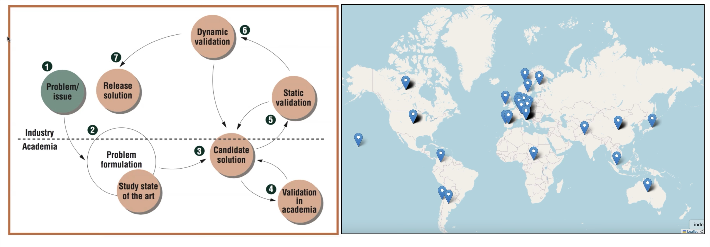

Dr. Sebastiano Panichella
Sebastiano Panichella is a passionate Computer Science Researcher at the Zurich University of Applied Science (ZHAW). He received the PhD in Computer Science from the University of Sannio (Department of Engineering) in 2014 defending the thesis entitled ''Supporting Newcomers in Open Source Software Development Projects'' (PDF). For more information have a look on his short CV or long CV.
His main research goal is to conduct industrial research, involving both industrial and academic collaborations,
to sustain the Internet of Things (IoT) vision, where future "smart cities" will be characterized by millions of smart systems and AI-enabled systems
(e.g., cyber-physical systems such as drones, and other autonomous vehicles) connected over the internet, composed by AI-components, and/or controlled by complex embedded software implemented for the cloud.
- 
His research interests are in the domain of Software Engineering (SE), cloud computing (CC), and Data Science (DS): DevOps (e.g., Continuous Delivery, Continuous integration),
Machine learning applied to SE, Software maintenance and evolution (with particular focus on Cloud, mobile, AI-based, and Cyber-physical applications),
Mobile Computing. Moreover, he is promoting DS research on "Summarization Techniques for Code, Changes, and Testing".
He authored or co-authored around one hundred papers appeared in International Conferences and Journals. These research works involved studies with industrial and open projects and received
best paper awards
or best paper nominations .
He supervised (or co-supervised) 11 undergrad students, 22 MSc students and currently/recently
9 PhD students (6 of them during the postdoctoral experience at the University of Zurich), and 8 research assistants. He serves and has served as a program committee member of various international
conference (e.g., ICSE, ASE, FSE, ICSME, etc.). Dr. Panichella was selected in 2019 as one of the top-20 (second in Switzerland) Most Active Early Stage Researchers Worldwide (results reported by the JSS journal)
in SE. Dr. Panichella was selected In 2021 as one of the top-20 Most impactful SE researchers Worldwide (results reported by the JSS journal).
According to (the September 2022 data-update from) the article "A standardized citation metrics author database annotated for scientific field"
(in the report), a ranking (or selection) of researchers is made
(by the Stanford University) and Dr. Panichella appears in the percentile rank of the top 2% or above in the sub-field of Software engineering. Similarly, Dr. Panichella appears in the percentile rank of the top 2% or above in the sub-field for 2023.
He is an Editorial Board Member of Journal of Software: evolution and process (JSEP) and the Transactions on Software Engineering and Methodology (TOSEM) journal.
He is also a distinguished reviewer of the TOSEM (Transactions on Software Engineering and Methodology) journal.
His research was funded in the past by
- by one Swiss National Science Foundation Grant with the project called COSMOS: DevOps for Complex Cyber-physical Systems (since 2021), - https://www.cosmos-devops.org/
- the H2020 with the project called SURF-MobileAppsData The goal of the SURF-MobileAppsData (since 2021) - http://www.ifi.uzh.ch/en/seal/research/projects/SURF-MobileData.html
- the Innosuisse with the project called "ARIES: Exploiting User Journeys and Testing Automation for Supporting Efficient Energy Service Platforms" (since 2021) - https://www.aries-devops.ch/index.html
His research is currently supported by
- the Hasler Foundation with the project called "Bridging the Reality Gap in Testing Unmanned Aerial Vehicles" (since 2024)
- the Swiss National Science Foundation with the project called "SwarmOps: Human-sensing based MLOps for Collaborative Cyber-physical systems" (since 2024)
- the Horizon EU ("Marie Skłodowska-Curie Actions-funded Doctoral Networks") with the project called InnoGuard: Hybrid and Generative Intelligence for Trustworthy Autonomous Cyber-Physical Systems (since 2024)
- According to the [Results reported by the Journal of Systems and Software]
- Dr. Panichella was selected in 2019 as one of the top-20 (second in Switzerland) Most Active Early Stage Researchers Worldwide in SE. - Dr. Panichella was selected In 2021 as one of the top-20 Most impactful SE researchers Worldwide (results reported by the JSS journal) - Dr. Panichella is main PI of the proposal submitted to the H2020 grant`` called "COSMOS: DevOps for Complex Cyber-physical Systems" selected for funding in 2021.
- Dr. Panichella is main PI of the proposal submitted to the Innosuisse `` called "ARIES: Exploiting User Journeys and Testing Automation for Supporting Efficient Energy Service Platforms" selected for funding in 2021.
- Dr. Panichella is main PI of the proposal submitted to the Hasler Foundation `` called "Bridging the Reality Gap in Testing Unmanned Aerial Vehicles" was recently selected for funding in 2023.
- Dr. Panichella is main PI of the proposal submitted to the Swiss National Science Foundation `` called "SwarmOps: Human-sensing based MLOps for Collaborative Cyber-physical systems" was recently selected for funding in 2023.
- Dr. Panichella is main PI of the proposal submitted to the Horizon grant ("Marie Skłodowska-Curie Actions-funded Doctoral Networks") `` called "InnoGuard: Hybrid and Generative Intelligence for Trustworthy Autonomous Cyber-Physical Systems" selected for funding in 2024.
- The paper [Sebastiano Panichella, Andrea Di Sorbo, Emitza Guzman, Corrado Aaron Visaggio, Gerardo Canfora, Harald C. Gall: How can I improve my app? Classifying user reviews for software maintenance and evolution. ICSME 2015: 281-290], which originated the idea behind his first (SNF) funded project, is one of the most cited papers of ICMSE 2015 (as reported in Google scholar), with over 500 citations in around 9 years.
1) Recent Achievements of Sebastiano Panichella:
2) Research Motto: "It does not make sense to try to be one of the most brilliant scientists. It makes much more sense and it is also more fun to try to be one of the most curious and passionate among them"
3) Favourite Quotes and References:
- It is never wrong to do the right thing.. (Mark Twain)
- Nothing truly valuable arises from ambition or from a mere sense of duty; it stems rather from love and devotion towards men and towards objective things.. (Albert Einstein)
- I never teach my pupils. I only attempt to provide the conditions in which they can learn. (Albert Einstein)
- You cannot teach a man anything; you can only help him find it within himself. (Galileo Galilei)
- "Even a broken clock is right twice a day". - Ergo, there is always something good in any person . (Stephen Hunt)
- A man is old only when his remorse exceeds his dreams. (Albert Einstein)
- "It is not our abilities that show what we truly are. It is our choices.” (Harry Potter and the Chamber of Secrets)
- There ain't no such thing as a free lunch
4) Recommended links for students:
- Major ingredients of successful and timely completion of PhD? Few, but important!  - Do you need a Ph.D.?
- If you are going to use Heat-maps, best practice seems to be to use a single color, or two close colors, with a consistent shading from light to dark in case of Heat-maps: link.
- STATISTICS: Useful set of slides on the usage of some statistics by Andrea Arcuri: and here practical examples https://machinelearningmastery.com/statistical-hypothesis-tests-in-python-cheat-sheet/ .
- To get nice holidays in your summer break visit Italy, about this see the following slides or follow my blog
- Do you need a Ph.D.?
- If you are going to use Heat-maps, best practice seems to be to use a single color, or two close colors, with a consistent shading from light to dark in case of Heat-maps: link.
- STATISTICS: Useful set of slides on the usage of some statistics by Andrea Arcuri: and here practical examples https://machinelearningmastery.com/statistical-hypothesis-tests-in-python-cheat-sheet/ .
- To get nice holidays in your summer break visit Italy, about this see the following slides or follow my blog